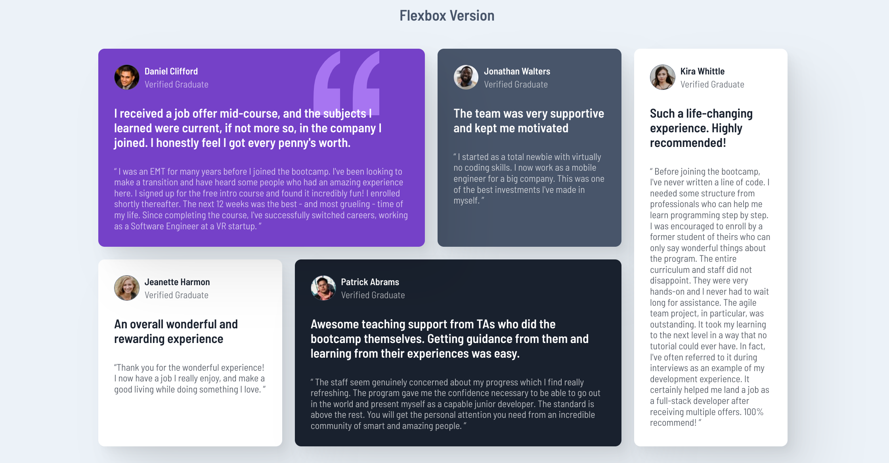
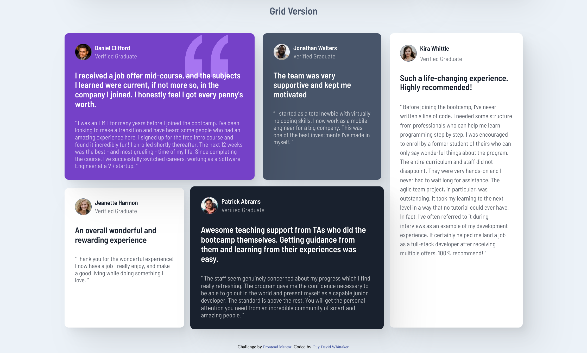
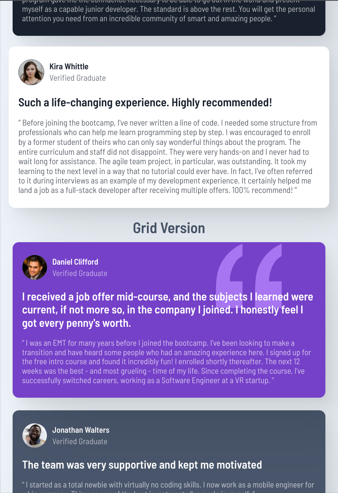
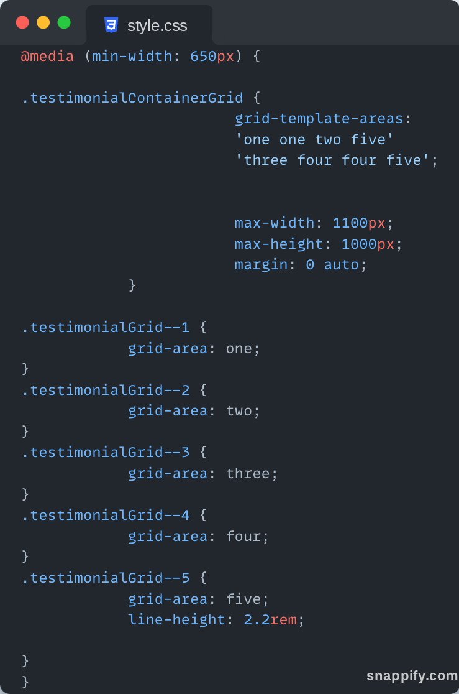

Summary
This project comes from frontendmentor.io which has lots of project challenges for frontend developers to choose from in order to practice their skills.
The aim of the project was to replicate a testimonials grid layout as specified in the page's project brief and provided design documents. I used this project to practice both my flexbox and grid skills, building the same testimonials grid twice to practice each layout type and compare the differences. Overall this was an enjoyable practice project and I am happy with the end result.
- HTML5
- CSS
- Flexbox
- Grid
Flexbox Version
Grid Version
Building the project 🛠️
I found flexbox and grid to be quite confusing topics when I first started studying them. It wasn't until I started building lots of things using these layout structures that I fully grasped how they work and their unique intricacies. So when I saw this project I thought it would be a perfect opportunity to further my Flexbox and Grid skills.
I started with the mobile designs first as I had learned this is best practice, and which for both layouts was fairly easy. For the flex layout I just put the cards within one general wrapping container and then applied margin between each testimonial card. For the grid I turned the main wrapping container into a grid, applied a gap value and the same look was achieved. The internal part of the cards was done using flexbox and having three different containers which flowed in a column direction, followed by individual tweaking of each container in order to get the desired appearance (including several smaller flexboxes for the top section).
Mobile Version
The tablet/desktop version is where things got slightly more complicated. In order to create the unique testimonials grid layout with flexbox I first sketched it out on paper and then began dividing the sketch into different segments. This left me knowing that I needed to create a left and right container, and within the left container to create a top and bottom container. Then, in order to get the right sizings for each card I then played around with the flex-basis property on each one instead of using traditional length values (px, % etc) - a property I hadn't really used before. This helped me appreciate, as odd as it may sound, that 100% really means 100% of the available space! This is because I discoverd that if the combined card size and gap size totalled more than 100%, elements overflow their container - not good!
I found creating the testimonials grid with CSS Grid much simpler and easier to do. I could have made the grid via 2 different methods:
1) To have used the grid-template-columns property to have made a grid with 4 equally sized columns, and then to have done some individual adjustments to the card sizings within the grid using the 'span' value or the grid-column and grid-row shorthand properties.
2) To use the grid-template-areas property to visually describe how much area each card should occupy within the described grid layout.
I decided to opt for the latter option. Not only because it seemed easier to me, but because I had seen many people online recommended this method and I wanted to get some practice with it. Indeed creating the testimonials grid this way was fairly easy and better yet required very little CSS code overall.
Grid Layout Code
Project Reflection 🤔
This project gave me a good general sense of each CSS layout model and how the different properties which each one brings can be best utilised in order to create a design like this one.
I ultimately found that, at least for a design like this, that CSS Grid was undeniably quicker and easier to use than CSS Flexbox. Flexbox required a lot more control and layering in ordered to get the desired result, whereas with Grid the testimonial grid layout could be achieved with just one property and a couple of values. However, one drawback of this method I found is that there is less precise control of the size of the cards. As a result, the Grid Version looks slightly less like the original design than the Flexbox one, whose cards sizes I could control precisely using flex-basis.
Lastly, have you ever seen an episode of "The Joy of Painting with Bob Ross"? It really is something to watch how Ross turns a blank canvas into a beautiful piece of art in such a short period of time. What's more, for about 50-70% of the episode the painting still doesn't really look like anything special, just a couple of general background layers and shapes - layers which Ross stresses are not to be undervalued! As the episode comes to end suddenly, before our eyes, it seems as if a beautiful piece of art appears as if from nowhere! It's great to watch.
Well, I realised with this project that building webpages is not too dissimilar from a Bob Ross painting. At first, we establish the main containers and layers which are going to hold all our page's content and approximately where they are going to sit on the page. Then we add the content, but still our webpage doesn't look anything special. It's only towards the end when we do the fine-tuning and tweaking and add more CSS that our page really comes to life and you have something that you look at and you say "Wow! That looks great." In a way, frontend developers are as also artists, only that our canvas is the web browser viewport and not a real one.